Votre maison mérite bien plus qu'un simple gardien.
La Clef Provençale prend en charge l'intégralité de la gestion de votre villa ou maison en Provence : accueil des voyageurs, entretien, valorisation et revenus optimisés. Vous gardez les clés de la décision, nous portons toute la charge.
Posséder une villa en Provence ne devrait jamais être une charge
Entre les saisons, les voyageurs, l'entretien et les imprévus, gérer un bien à distance ou sur son temps libre devient vite épuisant. Voici ce que nous entendons le plus souvent de la part des propriétaires avant de nous rencontrer.
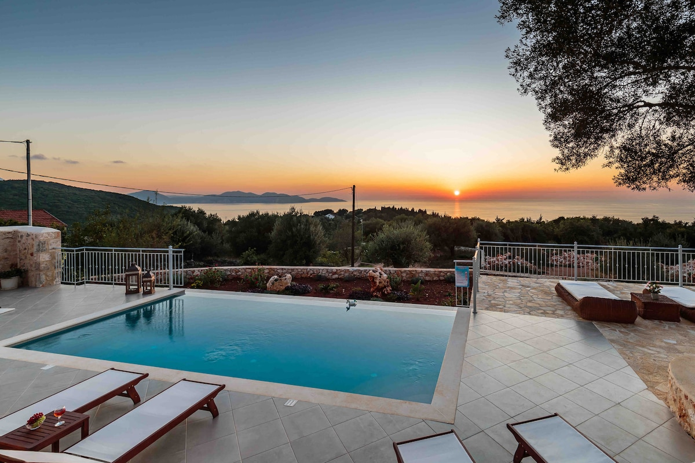
Un bien chronophage
Annonces, messages, check-in, ménage, réparations : la gestion locative dévore un temps que vous n'avez pas.
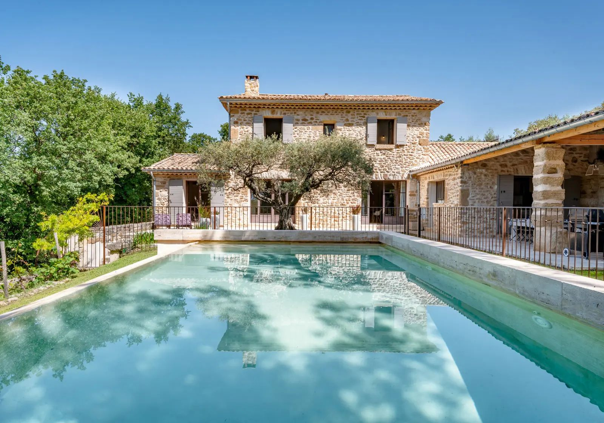
Peur des dégradations
Sans présence sur place, difficile de garantir que votre bien est traité avec le respect qu'il mérite.
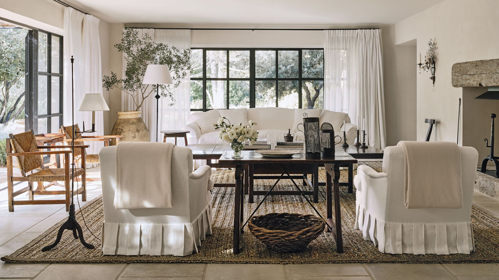
Revenus sous-optimisés
Mauvais calendrier, tarifs mal ajustés, visibilité limitée : votre bien ne génère pas ce qu'il pourrait.
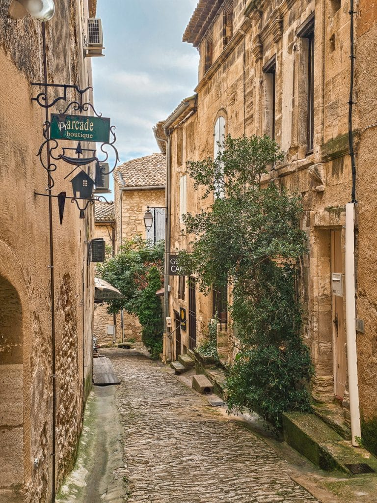
Absence & distance
Vous vivez loin ou voyagez souvent : impossible d'être réactif face à un imprévu ou une urgence.
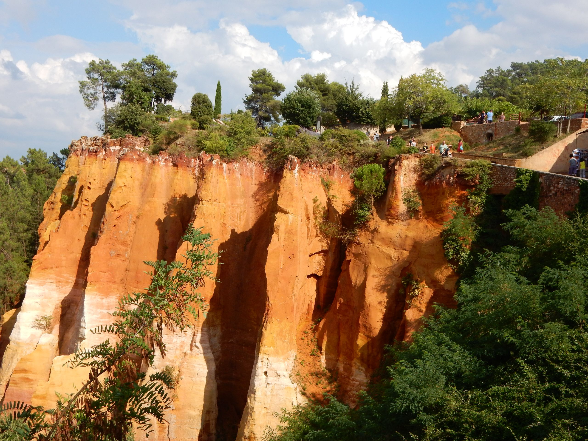
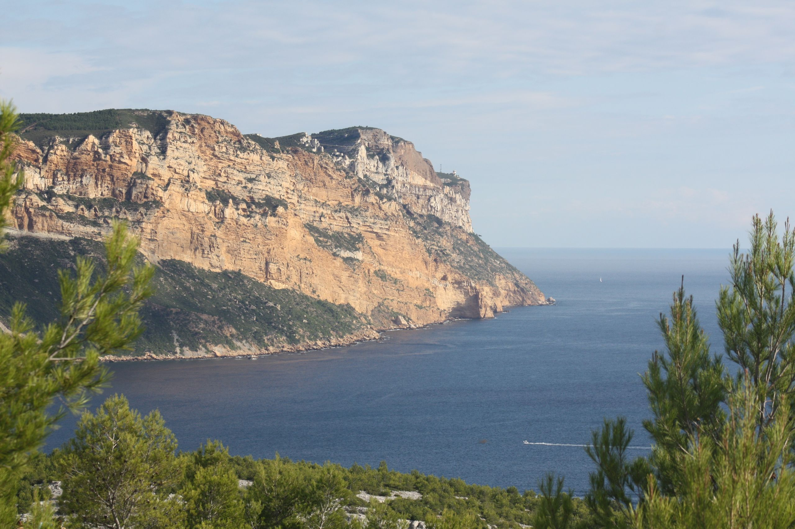
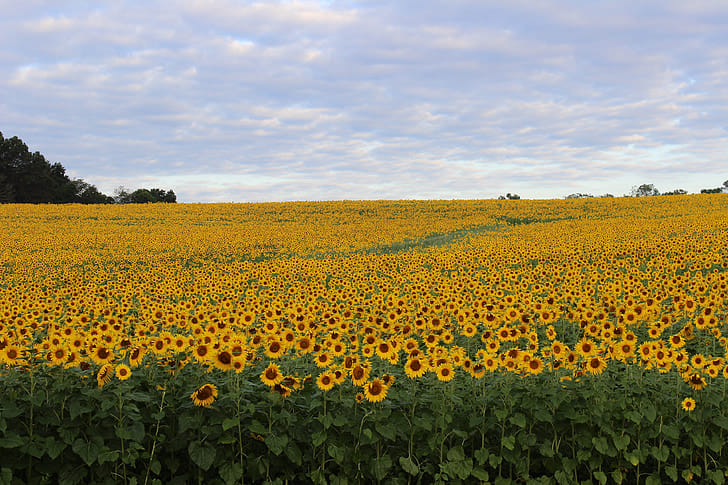
Comment fonctionne notre conciergerie
Un accompagnement clé en main, pensé pour vous rendre votre tranquillité d'esprit dès le premier échange.
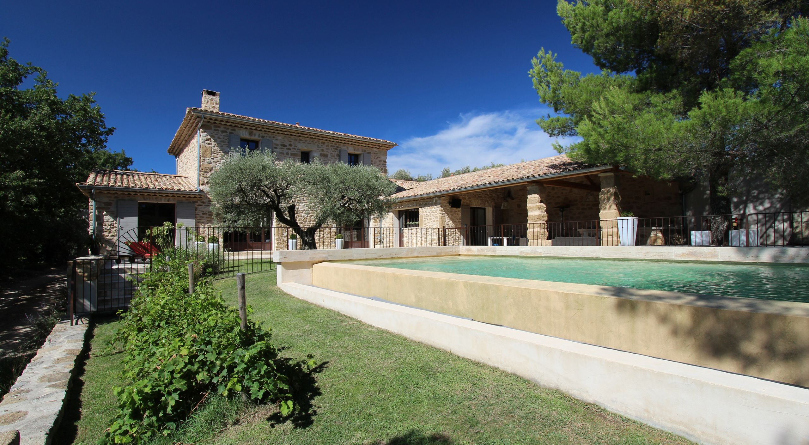
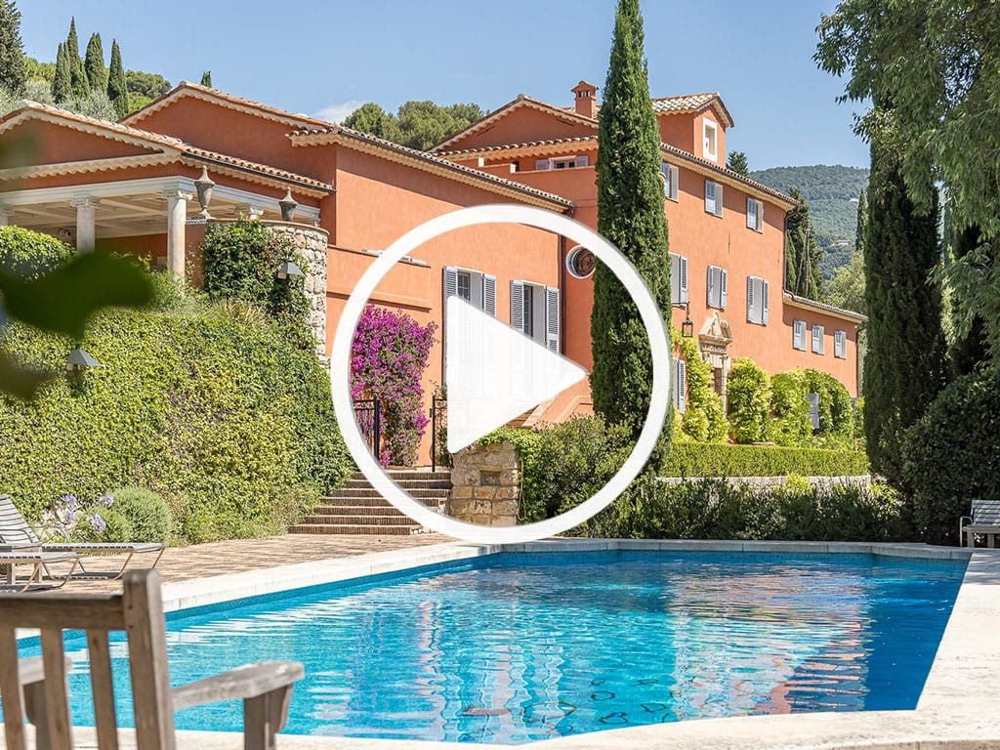
Audit & estimation
Nous visitons votre bien, évaluons son potentiel locatif et vous proposons une stratégie sur mesure, sans engagement.
Mise en valeur
Reportage photo professionnel, rédaction des annonces et diffusion multicanal pour maximiser la visibilité de votre bien.
Gestion complète
Accueil des voyageurs, ménage hôtelier, gestion des clés, entretien technique : nous orchestrons tout, en votre absence.
Reversement & suivi
Vous recevez un reporting transparent et vos revenus, sans jamais avoir à gérer la moindre sollicitation.
Une villa entretenue, valorisée, et qui travaille pour vous
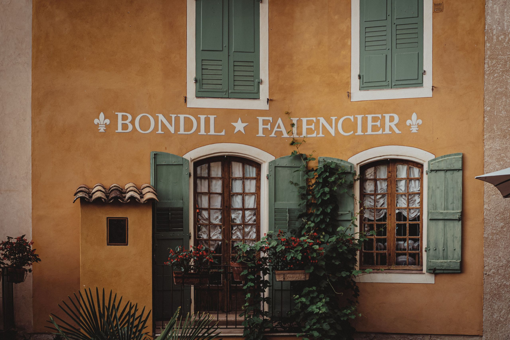
Revenus optimisés
Tarification dynamique et diffusion large pour maximiser votre taux d'occupation et vos revenus annuels.
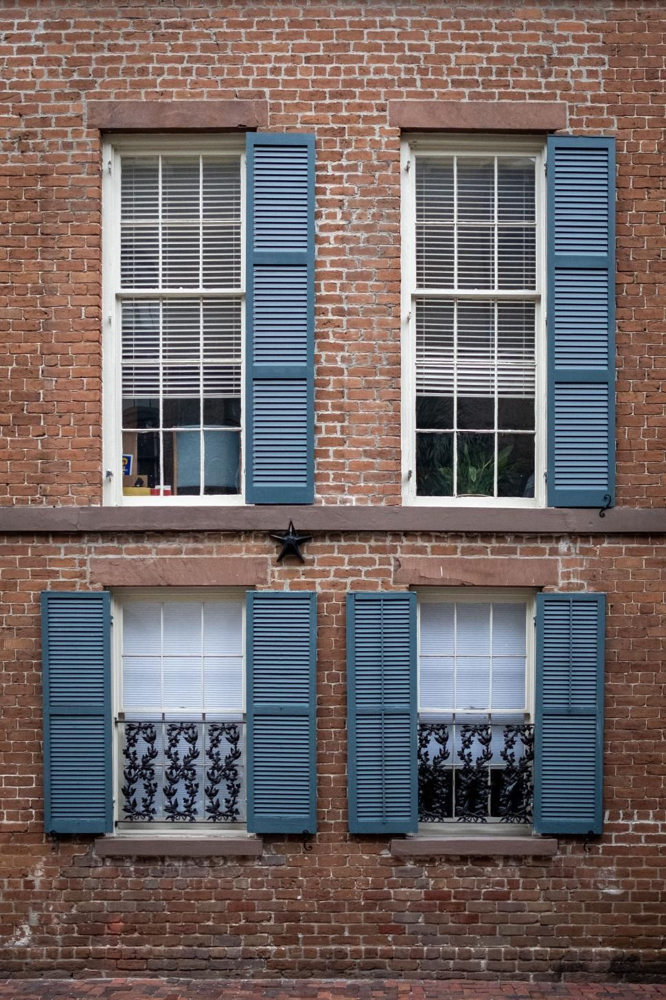
Bien protégé
Contrôles systématiques avant/après chaque séjour, entretien préventif et intervention rapide en cas de besoin.
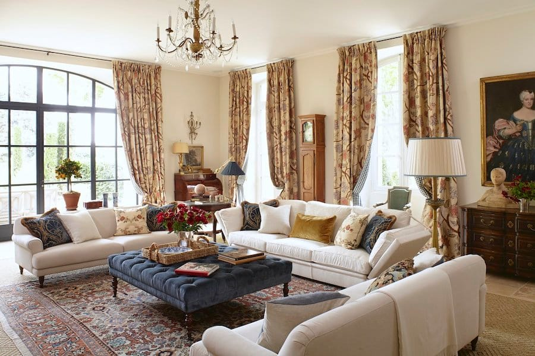
Zéro stress
Nous gérons les voyageurs, les urgences et les prestataires. Vous ne recevez qu'un reporting clair.
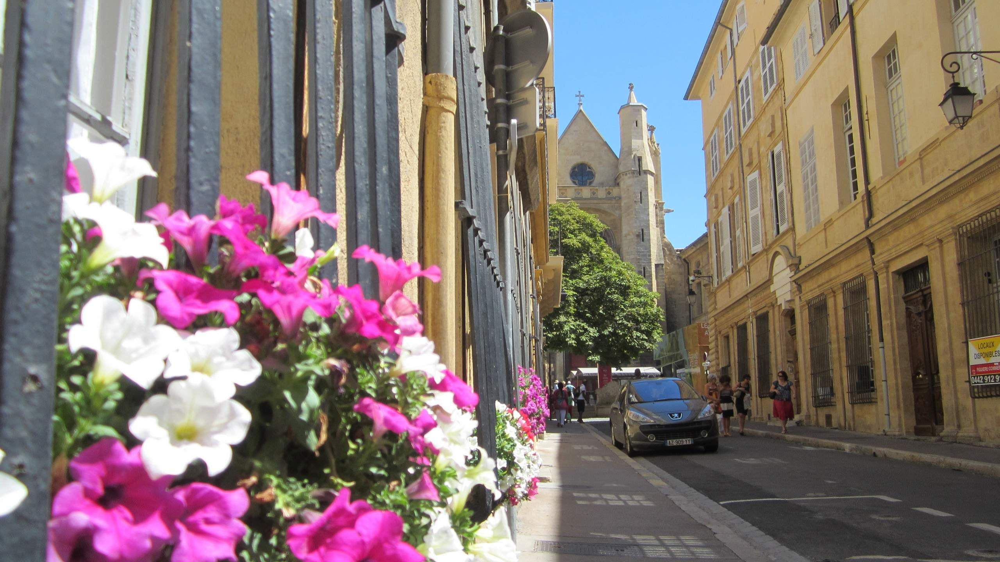
Disponibilité préservée
Envie de séjourner dans votre bien ? Vous gardez un accès prioritaire selon les modalités que vous choisissez.
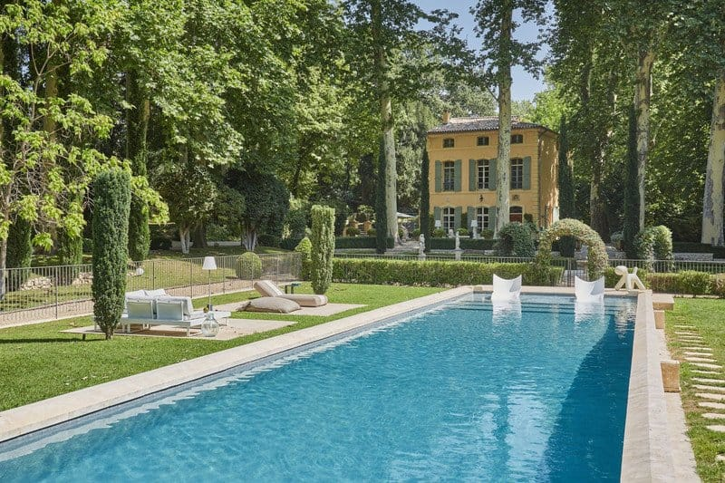
« Depuis que La Clef Provençale gère notre bastide, nous n'avons plus jamais eu à nous en soucier. Les revenus ont augmenté et notre maison n'a jamais été aussi bien entretenue. »
Des biens d'exception, une gestion irréprochable
Du mas viticole du Luberon à la villa dominant les Calanques de Cassis, nous accompagnons aujourd'hui plusieurs propriétaires de maisons et villas à forte valeur patrimoniale partout en Provence.
Chaque bien est traité comme s'il était le nôtre : avec exigence, discrétion et un souci constant du détail.
Découvrir les biens que nous géronsPrêt à confier votre villa à des mains expertes ?
En 20 minutes, faisons le point sur votre bien, votre secteur et votre objectif. Sans engagement, sans pression — juste des réponses claires.